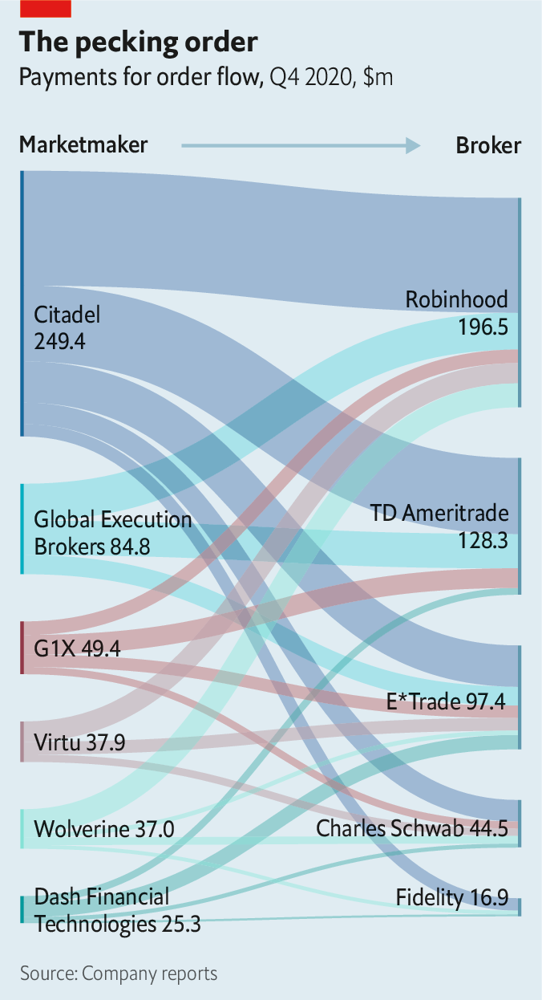

2021-02-18T13:58:05+00:00
The new intermediaries
新式中介
新式中介
Pay-per trade
每笔交易返点
每筆交易返點
The rise of high-speed marketmakers and payment for order flow
高频做市商与订单流返点的崛起
高頻做市商與訂單流返點的崛起
FROM ONE perspective, retail stock traders have never had it so good. There is fierce competition among brokers, including the likes of Charles Schwab and Fidelity, for their business. This broke out into an all-out price war in 2019 when these firms cut stock-trading commissions to zero, four years after Robinhood, a startup promising commission-free trading, came on the scene. Retail participation in stock trading is at a new high.
从某种角度看，股票投资散户迎来了前所未有的好日子。嘉信理财（Charles Schwab）和富达（Fidelity）等券商激烈争夺他们。2019年，在承诺零佣金交易的创业公司罗宾侠（Robinhood）打入市场的四年后，这些公司把股票交易佣金降为零，打响了全面价格战。如今，参与股票交易的散户创下新高。
從某種角度看，股票投資散戶迎來了前所未有的好日子。嘉信理財（Charles Schwab）和富達（Fidelity）等券商激烈爭奪他們。2019年，在承諾零傭金交易的創業公司羅賓俠（Robinhood）打入市場的四年後，這些公司把股票交易傭金降為零，打響了全麵價格戰。如今，參與股票交易的散戶創下新高。
This happy picture is somewhat muddied by the practice of payment for order flow (PFOF). Instead of charging users for each trade, brokers are paid by marketmakers to direct users’ trades—or “order flow”—through them. Marketmakers take small profits on the difference between the price that a broker’s user pays and that at which a share is offered for sale in the market. The mania around GameStop, a seller of video games, has put the practice, and its practitioners, in the spotlight.
但这番美好图景有些被“订单流返点”（以下简称PFOF）这种操作蒙上了阴影。券商并不是就每笔交易向用户收取费用，而是通过把用户的交易——也就是“订单流”——导给做市商，从做市商那里获得付费。做市商从券商用户支付的价格和市场出售股票的价格差额中获取小额利润。围绕电子游戏销售商游戏驿站（GameStop）的交易狂潮让PFOF及其操作者成为了焦点。
但這番美好圖景有些被“訂單流返點”（以下簡稱PFOF）這種操作蒙上了陰影。券商並不是就每筆交易向用戶收取費用，而是通過把用戶的交易——也就是“訂單流”——導給做市商，從做市商那裡獲得付費。做市商從券商用戶支付的價格和市場出售股票的價格差額中獲取小額利潤。圍繞電子遊戲銷售商遊戲驛站（GameStop）的交易狂潮讓PFOF及其操作者成為了焦點。
On January 28th Robinhood decided to suspend buy orders for GameStop, after the retailer went viral in a forum on Reddit, a social-media site, and its shares spiked in value. The decision outraged users and was condemned by lawmakers on both sides of the aisle. Robinhood contends the decision reflected its obligations to the DTCC, a clearing-house that settles most equity trades. There is a two-day lag between an equity trade and its settlement, when the buyer gets their share and the seller receives their cash. In the interim, brokers must post collateral for users’ trades.
此前，散户在社交网站Reddit的一个讨论板上迅速抱团，推动游戏驿站的股价飙升。1月28日，罗宾侠决定暂时禁止用户买入该公司股票。此举引发用户激愤，也招来了美国两党议员的一致谴责。罗宾侠辩称，该决定体现了自己对美国证券托管结算公司（以下简称DTCC）这个结算美国大部分证券交易的机构负有的义务。证券交易和最终结算（即买方获得股票，卖方收到钱）之间有两天的时间差，在此期间券商必须为用户的交易提供担保。
此前，散戶在社交網站Reddit的一個討論板上迅速抱團，推動遊戲驛站的股價飆升。1月28日，羅賓俠決定暫時禁止用戶買入該公司股票。此舉引發用戶激憤，也招來了美國兩黨議員的一致譴責。羅賓俠辯稱，該決定體現了自己對美國證券託管結算公司（以下簡稱DTCC）這個結算美國大部分證券交易的機構負有的義務。證券交易和最終結算（即買方獲得股票，賣方收到錢）之間有兩天的時間差，在此期間券商必須為用戶的交易提供擔保。
Vladimir Tenev, one of Robinhood’s founders, said he received a “nerve-wracking” call from the DTCC as GameStop prices surged, asking him to post $3bn in collateral. To meet these demands, the firm drew down its credit lines with banks and raised $1bn in capital. (It has since raised a further $2.4bn.) And to limit the amount of collateral it would have to post, it also temporarily halted buy orders for certain stocks.
罗宾侠的创始人之一弗拉基米尔·特涅夫（Vladimir Tenev）表示，游戏驿站股价飙升之际，DTCC提出了“令人头痛”的要求，要他提供30亿美元的担保。为满足这一要求，罗宾侠通过提取银行信贷额度筹集到10亿美元的资金（此后又筹集了24亿美元）。为限制须提供的担保额，罗宾侠还暂停了某些股票的买入订单。
羅賓俠的創始人之一弗拉基米爾·特涅夫（Vladimir Tenev）表示，遊戲驛站股價飆升之際，DTCC提出了“令人頭痛”的要求，要他提供30億美元的擔保。為滿足這一要求，羅賓俠通過提取銀行信貸額度籌集到10億美元的資金（此後又籌集了24億美元）。為限制須提供的擔保額，羅賓俠還暫停了某些股票的買入訂單。

Users decried the decision. Robinhood earned around $200m from PFOF in the fourth quarter of 2020 (see chart). Last year most of its orders flowed through Citadel Securities, a marketmaker run by Ken Griffin, a Chicago-based billionaire. The same parent company owns Citadel, a hedge fund. It had bailed out Melvin Capital, one of the funds short-selling GameStop, which had been targeted by the army of retail investors.
用户高声谴责该决定。2020年第四季度，罗宾侠通过PFOF赚取了约两亿美元（见图表）。去年，其大部分订单都由芝加哥亿万富翁肯·格里芬（Ken Griffin）经营的做市商Citadel证券（Citadel Securities）成交。Citadel证券的母公司旗下还有对冲基金Citadel，该基金曾为梅尔文资本（Melvin Capital）纾困，后者是做空游戏驿站的基金之一，已经成为散户大军的逼空目标。
用戶高聲譴責該決定。2020年第四季度，羅賓俠通過PFOF賺取了約兩億美元（見圖表）。去年，其大部分訂單都由芝加哥億萬富翁肯·格里芬（Ken Griffin）經營的做市商Citadel證券（Citadel Securities）成交。Citadel證券的母公司旗下還有對沖基金Citadel，該基金曾為梅爾文資本（Melvin Capital）紓困，後者是做空遊戲驛站的基金之一，已經成為散戶大軍的逼空目標。
Users have questioned whether these links played some part in Robinhood’s decision to halt buy orders. (As has Elon Musk, the boss of Tesla, who nicknamed Mr Tenev “Vlad the stock impaler” when he interviewed him about the decision on social media on January 31st.) Mr Tenev has said “we absolutely did not do this at the direction of any marketmaker or hedge fund.” And Citadel has said it is not involved in, or responsible for, any retail broker’s decision to stop trading.
用户质疑这些关联是否影响到罗宾侠做出了暂停交易的决定。（特斯拉的老板马斯克也是这样想的。1月31日他在社交媒体上对话特涅夫讨论他的这项决定时，称他为“股市吸血鬼弗拉德”。）特涅夫表示：“我们绝对不是在任何做市商或对冲基金的指示下这么做的。”而Citadel也表示并未参与或主使任何散户券商暂停交易的决定。
用戶質疑這些關聯是否影響到羅賓俠做出了暫停交易的決定。（特斯拉的老闆馬斯克也是這樣想的。1月31日他在社交媒體上對話特涅夫討論他的這項決定時，稱他為“股市吸血鬼弗拉德”。）特涅夫表示：“我們絕對不是在任何做市商或對沖基金的指示下這麼做的。”而Citadel也表示並未參與或主使任何散戶券商暫停交易的決定。
But questions about the ethics and prevalence of the practice, which is banned in Britain and Canada, are likely to linger. The GameStop episode has drawn attention to a group of tech-savvy high-frequency marketmakers, notably Citadel, that has largely replaced banks as the main intermediaries of stockmarkets. They stand in between market participants and stock exchanges, matching trades in microseconds. Though they take orders from all sorts of institutions, including hedge funds and pension funds, they typically only pay for orders from retail brokers.
但对这种做法（在英国和加拿大是被禁止的）道德与否及其普遍性的质疑很可能会继续下去。游戏驿站事件引起了人们对Citadel等一批高科技高频做市商的关注，它们在很大程度上已经取代银行，成为了股票市场的主要中介方。它们居于市场参与者和证券交易所之间，在微秒之间匹配交易。尽管它们接受包括对冲基金和养老基金在内的各类机构投资者的订单，但通常只对来自散户券商的订单付费。
但對這種做法（在英國和加拿大是被禁止的）道德與否及其普遍性的質疑很可能會繼續下去。遊戲驛站事件引起了人們對Citadel等一批高科技高頻做市商的關注，它們在很大程度上已經取代銀行，成為了股票市場的主要中介方。它們居於市場參與者和證券交易所之間，在微秒之間匹配交易。儘管它們接受包括對沖基金和養老基金在內的各類機構投資者的訂單，但通常只對來自散戶券商的訂單付費。
That in itself is not necessarily suspicious: marketmakers regard retail order flow as “friendly”. Institutions might “run over” a marketmaker by placing orders in several places simultaneously, or place an “iceberg” order, one much larger than it first appears. Both strategies make it hard for the marketmaker to profit on trades. Retail orders carry no such risk.
这本身未必有什么问题：做市商认为散户订单流“友好”。机构投资者可能会通过同时在多处下单来“复核”做市商，或者下“冰山”单（即比一开始看起来大得多的订单）。这两种策略都会使做市商难以在交易中获利。散户订单没有这类风险。
這本身未必有什麼問題：做市商認為散戶訂單流“友好”。機構投資者可能會通過同時在多處下單來“複核”做市商，或者下“冰山”單（即比一開始看起來大得多的訂單）。這兩種策略都會使做市商難以在交易中獲利。散戶訂單沒有這類風險。
Much of the scrutiny, though, is likely to rest on Robinhood. The online broker earns a lot more from marketmakers than its peers do. This is because it charges more: for every 100 shares Robinhood’s users traded in companies listed in the S&P 500 in the fourth quarter of 2020, it collected an average of 41.8 cents from marketmakers. Charles Schwab, by contrast, collected just 11.7 cents.
但更多的审视可能会落到罗宾侠身上。这家线上券商从做市商那里赚到的钱比其同行多得多。这是因为它收费更高：2020年第四季度，罗宾侠的用户每交易100股标普500公司的股票，就能从做市商那里平均收取41.8美分。相比之下，嘉信理财仅收取11.7美分。
但更多的審視可能會落到羅賓俠身上。這家線上券商從做市商那裡賺到的錢比其同行多得多。這是因為它收費更高：2020年第四季度，羅賓俠的用戶每交易100股標普500公司的股票，就能從做市商那裡平均收取41.8美分。相比之下，嘉信理財僅收取11.7美分。
Robinhood has been in trouble with regulators before. In December the Securities and Exchange Commission told it off for not telling users it made money from PFOF. The commission also found the broker failed in its duty to execute users’ trades at the best possible price. Robinhood paid $65m to settle the charges. (It has said the fine relates to historical practices.)
罗宾侠之前也被监管机构盯上过。去年12月，它因在未告知用户的情况下通过PFOF获利而遭美国证监会（SEC）调查。该机构还发现它没有尽责以最佳价格为用户执行交易。罗宾侠支付了6500万美元达成和解。（它声称这笔罚款涉及的是历史行为。）
羅賓俠之前也被監管機構盯上過。去年12月，它因在未告知用戶的情況下通過PFOF獲利而遭美國證監會（SEC）調查。該機構還發現它沒有盡責以最佳價格為用戶執行交易。羅賓俠支付了6500萬美元達成和解。（它聲稱這筆罰款涉及的是歷史行為。）
Mr Tenev is due to testify in front of the House Financial Services Committee on February 18th. The subject of PFOF will inevitably come up. As its share price tumbles, GameStop’s time in the spotlight may soon be over. For Robinhood and PFOF, though, this is perhaps just the start. ■
特涅夫将于2月18日在美国众议院金融服务委员会（House Financial Services Committee）前作证。PFOF的议题会无可避免地被提起讨论。随着股价下跌，游戏驿站的高光时刻可能会很快结束。但对于罗宾侠和PFOF而言，或许一切才刚刚开始。
特涅夫將於2月18日在美國眾議院金融服務委員會（House Financial Services Committee）前作證。PFOF的議題會無可避免地被提起討論。隨着股價下跌，遊戲驛站的高光時刻可能會很快結束。但對於羅賓俠和PFOF而言，或許一切才剛剛開始。